Accelerate MongoDB Development
Claims are arriving faster than adjusters can work them. Every single one has to be matched against the right section of a policy document — three tiers, three PDFs, dense legal language. Right now a human reads the policy for every claim. Today you build the thing that does the matching, using MongoDB and IBM Bob — and you prove it can be trusted before you let it decide anything.
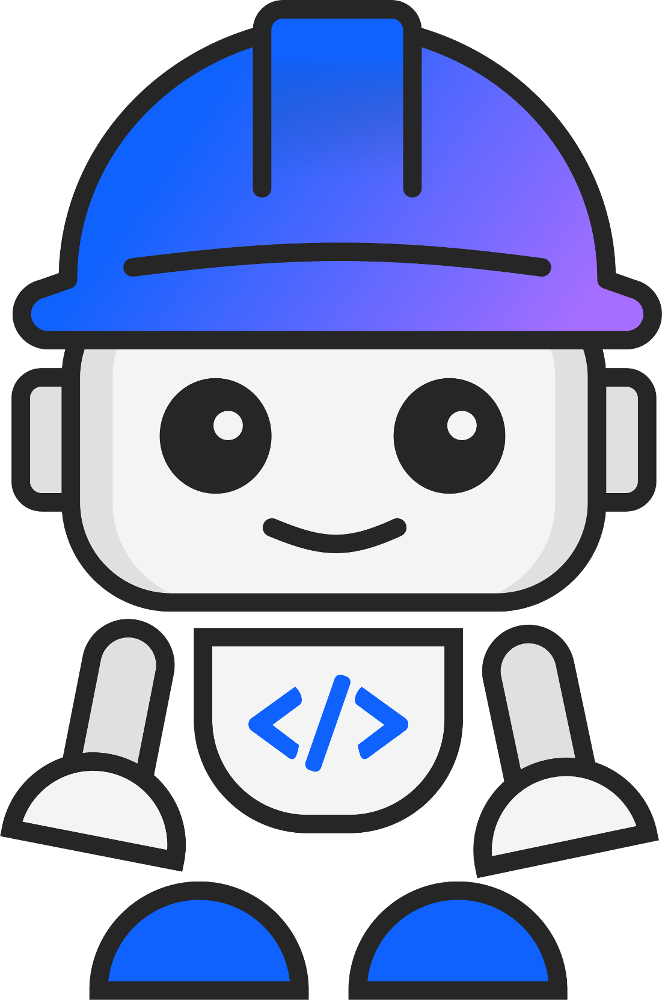
Pick your setup path in the top-right — macOS, Windows, Linux, or VM (managed/locked-down machine). The Prerequisites section updates to match.
The scenario
You're the developer supporting a claims operations team. Claims arrive faster than adjusters can work them, and every single one has to be matched against the right section of a policy document — three tiers, three PDFs, written in dense legal language. Right now a human reads the policy for every claim.
Your job is to build the thing that does the matching. The database already holds 58 claims (auto, home, life and health) with structured fields — descriptions, policy types, amounts, statuses. The coverage rules live in three PDFs. The gap between them is the problem.
And it's a harder gap than it looks. Matching a claim description to a policy section is a search problem — and traditional keyword search breaks down the moment a claimant writes "deer ran into my car" instead of "animal collision." You need search that understands meaning, not just matching words. That's where embeddings and vector search come in. But before any of this runs in production, you have to prove it gets the right answers. That's also part of your job today.
What you'll build — the same three moves for any matching problem
The use case is insurance, but the pattern is universal — any domain where unstructured claims, tickets, or requests need to be matched against a library of rules or documents:
Connect data to docs
Load the policy PDFs into MongoDB as searchable sections. The coverage rules and the claims live in the same database — now they can talk to each other.
Keyword vs vector
Run Atlas keyword search first — see where it works and where it misses. Then run vector search using the voyage-4 embedding model. Compare the results head to head.
Earn the trust
Grade both methods against the answer key. The failures show exactly why semantic search exists — and give you the evidence to know when the system can be trusted to decide.
You will not write a search query, call an embedding API, or manage index configuration manually. Bob handles all of that. Your job is to understand what the results mean — and to make the case that the system works before it touches a real decision.
How to read this guide
Every section is a numbered checklist. Do the blue numbered steps in order — that's the whole path. Each section ends on a green ✓ checkpoint that tells you exactly what "done" looks like.
A grey "⚠ Only if…" bar is a fix for a problem you probably won't hit. Ignore it unless it matches what's on your screen.
What you need
- A laptop with internet. No database install, no Docker, no open ports — everything goes out over normal HTTPS.
- A free Bob account — sign up with your personal email at bob.ibm.com. Step 01 walks you through it.
- A MongoDB connection string provided by your instructor — you'll add it to your config in Step 02.
Raise a hand — helpers are walking the room. And once Bob is installed, you can ask Bob itself for help right inside the app.
Download the workshop files
Before you install anything, grab the workshop files from Box. That way they'll be sitting in your Downloads folder ready to drag in when you open Bob later — no switching back and forth.
-
1
Download the files from Box
Open the shared workshop folder at ibm.box.com/v/toronto-devday in your browser and download the following files individually — do not use the folder-level Download button:
policy_basic.pdfpolicy_plus.pdfpolicy_plus_extra.pdfload_policies.pyanswer_key.csv
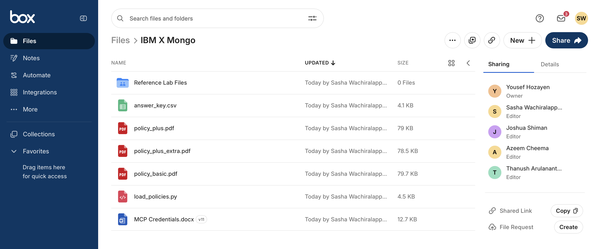
The IBM X Mongo Box folder — download each file individually. Password protectedThe Box folder is password protected — your instructor will give you the password on the day.
-
✓
Checkpoint — files are in Downloads
All 5 files are in your Downloads folder. Leave them there — you'll drag them into
mongo-labduring Prerequisites. Continue to the next step.
Install, sign in & open IBM Bob
Bob is IBM's AI coding assistant and the application you'll work in for the entire workshop. Get it installed, signed in, and your project folder open before moving on — the terminal you'll use for all setup commands lives inside Bob.
Bob is pre-installed on your VM and the install/sign-in steps are covered inside the Prerequisites section. Select VM in the top-right and go straight to Prerequisites.
▶💡 Already have Bob installed and signed in? skip to step 3
Launch Bob, open the mongo-lab folder (or create it now), trust it, then open the terminal panel (Ctrl + `) and continue to Prerequisites.
-
1
Download and install Bob
Go to bob.ibm.com/download and download the build for your computer. Look for the macOS download — open the
.dmg, drag Bob into Applications, then launch it. If macOS warns you "can't be opened because it is from an unidentified developer", right-click the app and choose Open, then click Open again in the dialog. -
2
Create a free account and sign in
When Bob opens it will prompt you to sign in. If you don't have an account yet:
- Click Sign up (or go to bob.ibm.com and choose Try for free).
- Enter your personal email address and create a password — no IBM ID or company account needed.
- Check your inbox for a verification email from IBM Bob and click the confirmation link. If you don't see it after a minute, check your Spam or Junk folder.
- Return to Bob and sign in with the same email and password.
Already have an account?Just click Sign in and enter your email and password. Skip straight to step 3.
-
3
Open your project folder
Choose File → Open Folder… from the menu bar. Create a new folder called
mongo-labsomewhere easy to find (your home folder or Desktop is fine), select it, and click Open.Bob may show a Restricted Mode badge in the bottom-left status bar — click it, then click Trust.
Why trust the folder?Without trust, Bob runs in Restricted Mode — the terminal won't work and MCP tools are disabled. It's a folder you just created, so it's safe to trust.
-
4
Open Bob's terminal
Press Ctrl + ` (that's the backtick key, top-left of your keyboard next to 1), or go to Terminal → New Terminal in the menu bar. A panel opens at the bottom of Bob with a blinking cursor. Leave this open — all setup commands in the next section are typed here.
-
✓
Checkpoint — Bob is ready
Bob is installed, you're signed in, the
mongo-labfolder is open and trusted, and the terminal is running. Continue to Prerequisites.
▶💡 Already have Bob installed and signed in? skip to step 3
Launch Bob, open the mongo-lab folder (or create it now), trust it, then open the terminal panel (Ctrl + `) and continue to Prerequisites.
-
1
Download and install Bob
Go to bob.ibm.com/download and download the build for your computer. Look for the Windows download — run the
.exeinstaller, click through the prompts (all defaults are fine), then open Bob from the Start menu. -
2
Create a free account and sign in
When Bob opens it will prompt you to sign in. If you don't have an account yet:
- Click Sign up (or go to bob.ibm.com and choose Try for free).
- Enter your personal email address and create a password — no IBM ID or company account needed.
- Check your inbox for a verification email from IBM Bob and click the confirmation link. If you don't see it after a minute, check your Spam or Junk folder.
- Return to Bob and sign in with the same email and password.
Already have an account?Just click Sign in and enter your email and password. Skip straight to step 3.
-
3
Open your project folder
Choose File → Open Folder… from the menu bar. Create a new folder called
mongo-labsomewhere easy to find (your home folder or Desktop is fine), select it, and click Open.Bob may show a Restricted Mode badge in the bottom-left status bar — click it, then click Trust.
Why trust the folder?Without trust, Bob runs in Restricted Mode — the terminal won't work and MCP tools are disabled. It's a folder you just created, so it's safe to trust.
-
4
Open Bob's terminal
Press Ctrl + ` (that's the backtick key, top-left of your keyboard next to 1), or go to Terminal → New Terminal in the menu bar. A panel opens at the bottom of Bob with a blinking cursor. Leave this open — all setup commands in the next section are typed here.
-
✓
Checkpoint — Bob is ready
Bob is installed, you're signed in, the
mongo-labfolder is open and trusted, and the terminal is running. Continue to Prerequisites.
▶💡 Already have Bob installed and signed in? skip to step 3
Launch Bob, open the mongo-lab folder (or create it now), trust it, then open the terminal panel (Ctrl + `) and continue to Prerequisites.
-
1
Download and install Bob
Go to bob.ibm.com/download and download the build for your computer. Look for the Linux download — for
.deb: runsudo dpkg -i <file>.deb. For AppImage: right-click → Properties → allow executing as program, then double-click. -
2
Create a free account and sign in
When Bob opens it will prompt you to sign in. If you don't have an account yet:
- Click Sign up (or go to bob.ibm.com and choose Try for free).
- Enter your personal email address and create a password — no IBM ID or company account needed.
- Check your inbox for a verification email from IBM Bob and click the confirmation link. If you don't see it after a minute, check your Spam or Junk folder.
- Return to Bob and sign in with the same email and password.
Already have an account?Just click Sign in and enter your email and password. Skip straight to step 3.
-
3
Open your project folder
Choose File → Open Folder… from the menu bar. Create a new folder called
mongo-labsomewhere easy to find (your home folder or Desktop is fine), select it, and click Open.Bob may show a Restricted Mode badge in the bottom-left status bar — click it, then click Trust.
Why trust the folder?Without trust, Bob runs in Restricted Mode — the terminal won't work and MCP tools are disabled. It's a folder you just created, so it's safe to trust.
-
4
Open Bob's terminal
Press Ctrl + ` (that's the backtick key, top-left of your keyboard next to 1), or go to Terminal → New Terminal in the menu bar. A panel opens at the bottom of Bob with a blinking cursor. Leave this open — all setup commands in the next section are typed here.
-
✓
Checkpoint — Bob is ready
Bob is installed, you're signed in, the
mongo-labfolder is open and trusted, and the terminal is running. Continue to Prerequisites.
Prerequisites — install Node and uv
Bob is installed, signed in, and running. Now install two supporting tools: Node and uv. Run all the commands below in Bob's terminal — the panel at the bottom of Bob. Don't worry if you've never heard of these tools — this section walks you through everything step by step.
Bob is installed, signed in, and running. Now install two supporting tools: Node and uv. Run all the commands below in Bob's terminal — the panel at the bottom of Bob. Don't worry if you've never heard of these tools — this section walks you through everything step by step.
Bob is installed, signed in, and running. Now install two supporting tools: Node and uv. Run all the commands below in Bob's terminal — the panel at the bottom of Bob. Don't worry if you've never heard of these tools — this section walks you through everything step by step.
Your instructor has provided a virtual machine — everything is already set up for you. Follow the steps below to connect and get started. No installation needed on your physical laptop.
There are two things to install, and they do different jobs:
- Node.js 22 LTS — a runtime that lets your computer run JavaScript programs. The MongoDB MCP server (which connects Bob to your database in Step 02) is a JavaScript program, so Node needs to be on your machine to launch it. You won't write any JavaScript yourself. Version 22 LTS is required.
- uv — a tool that handles Python for you. It downloads and installs the right version of Python automatically, then creates an isolated sandbox (called a virtual environment) inside your
mongo-labfolder. This means the Python libraries for this workshop stay contained to this folder and don't interfere with anything else on your computer. You never manually install Python, and you never "activate" anything —uv runhandles it transparently.
There are two things to install, and they do different jobs:
- Node.js 22 LTS — a runtime that lets your computer run JavaScript programs. The MongoDB MCP server (which connects Bob to your database in Step 02) is a JavaScript program, so Node needs to be on your machine to launch it. You won't write any JavaScript yourself. Version 22 LTS is required.
- uv — a tool that handles Python for you. It downloads and installs the right version of Python automatically, then creates an isolated sandbox (called a virtual environment) inside your
mongo-labfolder. This means the Python libraries for this workshop stay contained to this folder and don't interfere with anything else on your computer. You never manually install Python, and you never "activate" anything —uv runhandles it transparently.
There are two things to install, and they do different jobs:
- Node.js 22 LTS — a runtime that lets your computer run JavaScript programs. The MongoDB MCP server (which connects Bob to your database in Step 02) is a JavaScript program, so Node needs to be on your machine to launch it. You won't write any JavaScript yourself. Version 22 LTS is required.
- uv — a tool that handles Python for you. It downloads and installs the right version of Python automatically, then creates an isolated sandbox (called a virtual environment) inside your
mongo-labfolder. This means the Python libraries for this workshop stay contained to this folder and don't interfere with anything else on your computer. You never manually install Python, and you never "activate" anything —uv runhandles it transparently.
-
1
Open Bob's terminal
All commands in this section run inside Bob's built-in terminal — you don't need to open a separate terminal application. If the terminal panel isn't already open at the bottom of Bob, press Ctrl + ` (backtick, top-left of the keyboard next to 1), or go to Terminal → New Terminal in the menu bar. You should see a prompt with a blinking cursor. Leave it open for the rest of this section.
-
2
Check if Node and uv are already installed
You may already have these tools. Run this in Bob's terminal — if all three lines print a version number and Node shows v22 LTS, you're done with this section. Skip straight to Step 6 (Confirm Python and libraries).
node --version npx --version uv --version▶💡 What to look for
You want to see three version numbers, with
nodeshowingv22.x.xor higher. If any command says "command not found", or Node is below v22, continue to Step 3 to install the missing tools. -
3
Install Node and uv
Click the copy button on each code block, paste it into Bob's terminal, and press Enter / Return. Wait for each command to finish before running the next — you'll know it's done when the cursor reappears on a new line.
macOSStep 3a — Install Homebrew. Homebrew is a package manager for macOS — it's the easiest way to install Node. Paste this and press Return:
/bin/bash -c "$(curl -fsSL https://raw.githubusercontent.com/Homebrew/install/HEAD/install.sh)"It will ask for your Mac password — nothing shows as you type, that's normal. Just type it and press Return. When it asks "Press RETURN/ENTER to continue or any other key to abort", press Return. This step can take several minutes — wait until the cursor reappears before continuing.
Step 3b — Make your terminal aware of Homebrew. Paste both lines together and press Return:
What does this do?This tells your terminal where to find Homebrew. Without it, commands like
brewwon't be recognised. You only need to do this once.echo 'eval "$(/opt/homebrew/bin/brew shellenv)"' >> ~/.zprofile eval "$(/opt/homebrew/bin/brew shellenv)"▶⚠ Only if you get "No such file or directory" after step 3b
Your Mac may be an older Intel model. Try this version instead:
echo 'eval "$(/usr/local/bin/brew shellenv)"' >> ~/.zprofile eval "$(/usr/local/bin/brew shellenv)"Step 3c — Install Node using Homebrew. This can take 3–5 minutes — leave the terminal running and wait:
brew install nodeStep 3d — Install uv (this also installs Python automatically when you use it):
curl -LsSf https://astral.sh/uv/install.sh | shStep 3e — Reload your terminal so it picks up the new
uvcommand:source ~/.zshrcWindowsStep 3a — Install Node. Go to nodejs.org/download in your browser. Look for the large green button labelled Download Node.js (LTS) and click it. A
.msiinstaller file will download — open it, click Next through every screen, and click Finish. All defaults are correct — don't change anything.Close and reopen PowerShell after Node installsOnce the Node installer finishes, close your PowerShell window completely and reopen it (Win + R → type powershell → Enter). This is required so PowerShell can find the newly installed Node commands.
Step 3b — Install uv. In your freshly reopened PowerShell, paste this and press Enter:
powershell -ExecutionPolicy ByPass -c "irm https://astral.sh/uv/install.ps1 | iex"When it finishes, close PowerShell and reopen it once more (Win + R → powershell → Enter) so the new
uvcommand is available.LinuxStep 3a — Install Node 22 LTS. Paste this and press Enter. It may ask for your password — nothing shows as you type, that's normal. This can take a few minutes:
curl -fsSL https://deb.nodesource.com/setup_22.x | sudo -E bash - sudo apt install -y nodejsOn Fedora/RHEL use
sudo dnf install nodejs(ensure the version is 22). On Arch usesudo pacman -S nodejs npm.Step 3b — Install uv:
curl -LsSf https://astral.sh/uv/install.sh | shStep 3c — Reload your terminal so it picks up the new
uvcommand:source ~/.bashrc -
4
Confirm Node and uv are installed
Let's verify everything installed correctly. Run each command below — each one should print back a version number. Node must be v22 LTS (e.g.
v22.x.xor above). If any of them say "command not found", see the fix below.macOSnode --version npx --version uv --versionWindowsnode --version npx --version uv --versionLinuxnode --version npx --version uv --version▶⚠ Only if a command says "not found"
Close Bob's terminal, reopen it (Ctrl + `), and try again — the most common cause is that the terminal opened before the install finished updating your PATH. If it still fails, re-run step 3 for the tool that's missing.
-
5
Add your workshop files and set up Python
Drag your workshop files into mongo-lab. Bob already has
mongo-labopen — you should see it in the Explorer panel on the left. Open your Downloads folder in a separate file browser window and drag all 5 files in directly:macOSOpen Finder (⌘ Cmd + N), click Downloads in the sidebar. Open a second Finder window (⌘ Cmd + N again), navigate to your home folder and open
mongo-lab. Place both windows side by side, select all 5 files in Downloads, and drag them intomongo-lab.WindowsPress ⊞ Win + E to open File Explorer, click Downloads in the left sidebar. Open a second File Explorer window (⊞ Win + E again), navigate to your user folder and open
mongo-lab. Place both windows side by side, select all 5 files in Downloads, and drag them intomongo-lab.LinuxOpen your file manager (Files, Nautilus, or Dolphin), navigate to Downloads. Open a second file manager window (Ctrl + N), navigate to your home folder and open
mongo-lab. Place both windows side by side, select all 5 files in Downloads, and drag them intomongo-lab.You should see all 5 files appear in Bob's Explorer panel on the left. Now run the rest of the setup in Bob's terminal to initialise Python:
macOScd ~/mongo-lab uv init uv add pymongo pypdfWindowscd $HOME\mongo-lab uv init uv add pymongo pypdfLinuxcd ~/mongo-lab uv init uv add pymongo pypdfWhat each line does:
cdmoves the terminal into the folder,uv initsets up the Python sandbox (and downloads Python if you don't have it),uv addinstalls the two libraries into that sandbox. -
6
Confirm Python and the libraries are working
Paste this into Bob's terminal and press Enter. It asks
uvto run a quick Python check inside the sandbox:uv run python -c "import pymongo, pypdf; print('pymongo', pymongo.version, '| pypdf', pypdf.__version__)"You should see a line like
pymongo 4.x.x | pypdf 5.x.x. That confirms Python is running inside the sandbox and both libraries are installed correctly. If you see anImportErrorinstead, re-run step 5. -
✓
Checkpoint — your machine is ready
Node, uv, and both Python libraries are installed. You're ready for Step 01.
-
1
Open Bob's terminal
All commands in this section run inside Bob's built-in terminal. If the terminal panel isn't already open at the bottom of Bob, press Ctrl + ` (backtick, top-left of the keyboard), or go to Terminal → New Terminal in the menu bar. Leave it open for the rest of this section.
-
2
Check if Node and uv are already installed
You may already have these tools. Run this in Bob's terminal — if all three lines print a version number and Node shows v22 LTS, skip straight to Step 6 (Confirm Python and libraries).
node --version npx --version uv --version▶💡 What to look for
You want to see three version numbers, with
nodeshowingv22.x.xor higher. If any command says "command not found", or Node is below v22, continue to Step 3. -
3
Install Node and uv
Click the copy button on each code block, paste it into Bob's terminal, and press Enter. Wait for each command to finish before running the next — you'll know it's done when the cursor reappears on a new line.
WindowsStep 3a — Install Node. Go to nodejs.org/download in your browser. Click the LTS download button, run the installer, and click through (all defaults are fine). This puts Node and
npxon your computer automatically.Step 3b — Install uv. Paste this into PowerShell and press Enter:
powershell -ExecutionPolicy ByPass -c "irm https://astral.sh/uv/install.ps1 | iex"When it finishes, close PowerShell and reopen it (Win + R → powershell → Enter) so the new
uvcommand is available. -
4
Confirm Node and uv are installed
Run each command below — each one should print back a version number. Node must be v22 LTS.
Windowsnode --version npx --version uv --version▶⚠ Only if a command says "not found"
Close Bob's terminal, reopen it (Ctrl + `), and try again. If it still fails, re-run step 3 for the tool that's missing.
-
5
Add your workshop files and set up Python
Drag your workshop files into mongo-lab. Bob already has
mongo-labopen — you should see it in the Explorer panel on the left. Press ⊞ Win + E to open File Explorer, click Downloads in the left sidebar. Open a second File Explorer window (⊞ Win + E again), navigate to your user folder and openmongo-lab. Place both windows side by side, select all 5 files in Downloads, and drag them intomongo-lab.You should see all 5 files appear in Bob's Explorer panel on the left. Now run the setup in Bob's terminal to initialise Python:
Windowscd $HOME\mongo-lab uv init uv add pymongo pypdfWhat each line does:
cdmoves the terminal into the folder,uv initsets up the Python sandbox (and downloads Python if you don't have it),uv addinstalls the two libraries. -
6
Confirm Python and the libraries are working
Paste this into Bob's terminal and press Enter:
uv run python -c "import pymongo, pypdf; print('pymongo', pymongo.version, '| pypdf', pypdf.__version__)"You should see a line like
pymongo 4.x.x | pypdf 5.x.x. If you see anImportError, re-run step 5. -
✓
Checkpoint — your machine is ready
Node, uv, and both Python libraries are installed. You're ready for Step 01.
-
1
Open Bob's terminal
All commands in this section run inside Bob's built-in terminal. If the terminal panel isn't already open at the bottom of Bob, press Ctrl + ` (backtick, top-left of the keyboard), or go to Terminal → New Terminal in the menu bar. Leave it open for the rest of this section.
-
2
Check if Node and uv are already installed
You may already have these tools. Run this in Bob's terminal — if all three lines print a version number and Node shows v22 LTS, skip straight to Step 6 (Confirm Python and libraries).
node --version npx --version uv --version▶💡 What to look for
You want to see three version numbers, with
nodeshowingv22.x.xor higher. If any command says "command not found", or Node is below v22, continue to Step 3. -
3
Install Node and uv
Click the copy button on each code block, paste it into Bob's terminal, and press Enter. Wait for each command to finish before running the next.
LinuxStep 3a — Install Node 22 LTS. Paste this and press Enter (it may ask for your password):
curl -fsSL https://deb.nodesource.com/setup_22.x | sudo -E bash - sudo apt install -y nodejsOn Fedora/RHEL use
sudo dnf install nodejs(ensure the version is 22). On Arch usesudo pacman -S nodejs npm.Step 3b — Install uv:
curl -LsSf https://astral.sh/uv/install.sh | shStep 3c — Reload your terminal so it picks up the new
uvcommand:source ~/.bashrc -
4
Confirm Node and uv are installed
Run each command below — each one should print back a version number. Node must be v22 LTS.
Linuxnode --version npx --version uv --version▶⚠ Only if a command says "not found"
Close Bob's terminal, reopen it (Ctrl + `), and try again. If it still fails, re-run step 3 for the tool that's missing.
-
5
Add your workshop files and set up Python
Drag your workshop files into mongo-lab. Bob already has
mongo-labopen — you should see it in the Explorer panel on the left. Open your file manager (Files, Nautilus, or Dolphin), navigate to Downloads. Open a second file manager window (Ctrl + N), navigate to your home folder and openmongo-lab. Place both windows side by side, select all 5 files in Downloads, and drag them intomongo-lab.You should see all 5 files appear in Bob's Explorer panel on the left. Now run the setup in Bob's terminal to initialise Python:
Linuxcd ~/mongo-lab uv init uv add pymongo pypdfWhat each line does:
cdmoves the terminal into the folder,uv initsets up the Python sandbox (and downloads Python if you don't have it),uv addinstalls the two libraries. -
6
Confirm Python and the libraries are working
Paste this into Bob's terminal and press Enter:
uv run python -c "import pymongo, pypdf; print('pymongo', pymongo.version, '| pypdf', pypdf.__version__)"You should see a line like
pymongo 4.x.x | pypdf 5.x.x. If you see anImportError, re-run step 5. -
✓
Checkpoint — your machine is ready
Node, uv, and both Python libraries are installed. You're ready for Step 01.
You will have received an email before the lab with a link to access your Linux VM. Everything happens inside that VM — you don't install anything on your physical laptop. Follow these steps instead of the ones above.
Your normal Ctrl+V shortcut won't work directly inside the VM. There are two ways to get text in — use whichever feels easier:
Option 1 — Clipboard Manager. Look for the clipboard icon in the VM toolbar (usually at the top or side of the browser window). Click it to open the Clipboard Manager, type or paste your text into the box, then click Sync to VM. Once synced, click where you want to paste inside the VM and right-click → Paste.

Option 2 — Send Text. Look for the Send Text option in the VM toolbar. Paste the text you want into the Send Text box. The VM will type it out character by character. Click your target location first — Send Text types wherever the cursor is focused, so make sure the right field or terminal is active before sending.
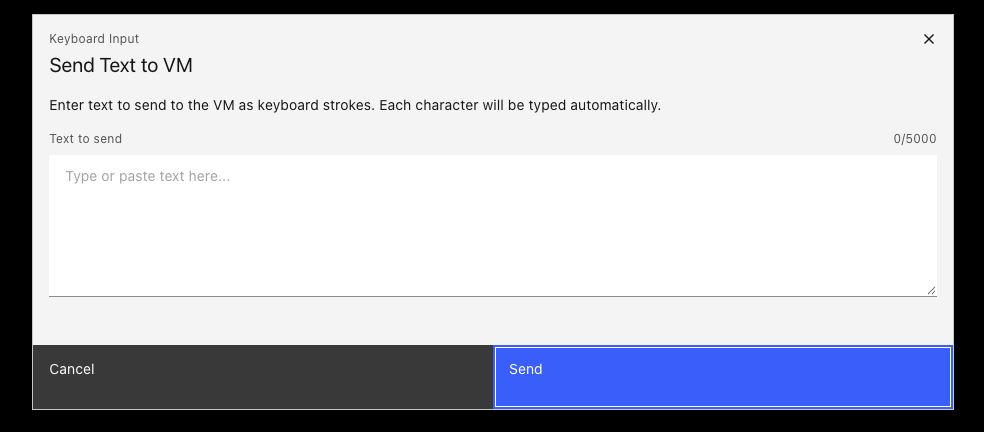
-
1
Access your VM via the Tech Zone email
Before the lab you will have received an email with a link to IBM Tech Zone. Follow these steps to open your VM:
- Open the email and click the link provided. It will open a Tech Zone page in your browser.
-
Click the downward arrow on the Tech Zone page to expand your reservation details.
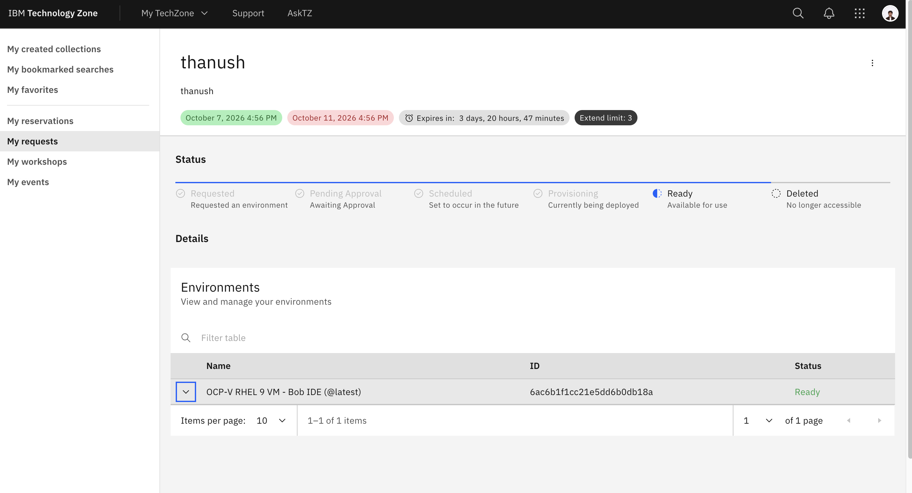
Click the downward arrow to expand your VM reservation. -
Click the URL link that appears in the expanded details. Note down the username and password shown here — you will need them in a moment.
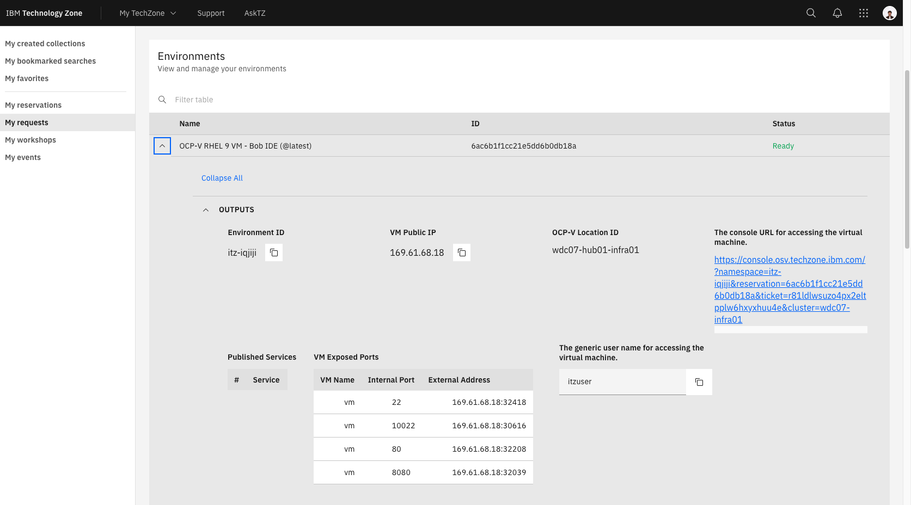
Click the URL link and note the username and password shown on this screen. -
Click the blue Console button on the page you are directed to.
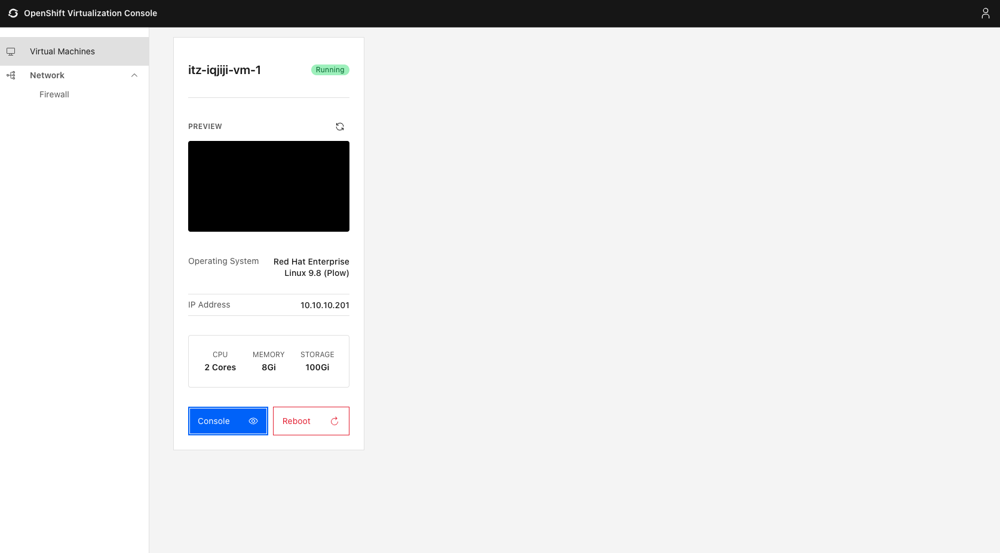
Click the blue Console button to open the login screen. -
On the login screen, check the Remember username for this session box and make sure the username and password fields are filled in. If they are blank, enter the credentials from the Tech Zone page in step 3. Once everything looks correct, click Connect with RDP.
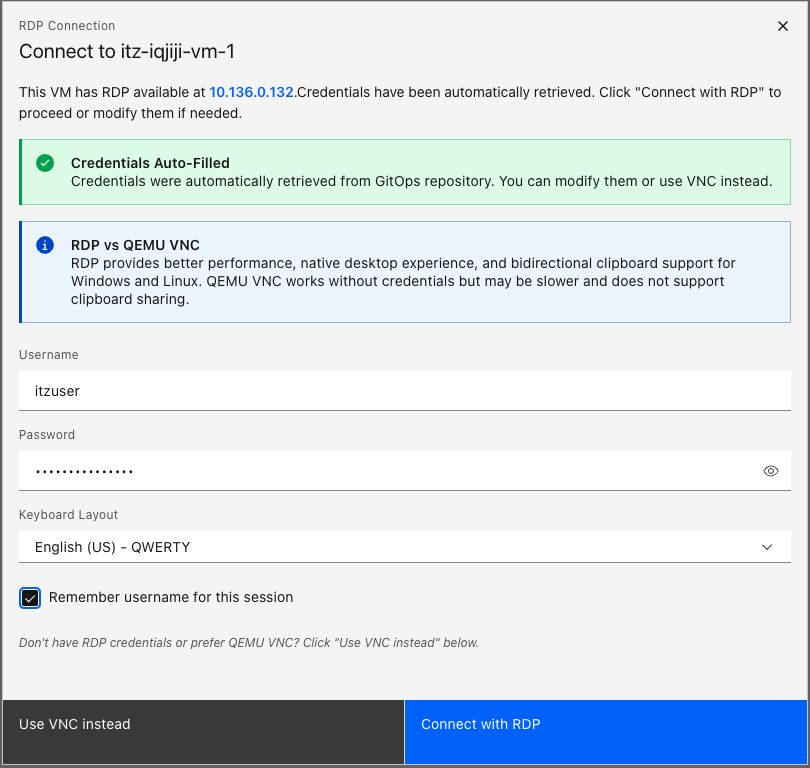
Check Remember username for this session, confirm the credentials are filled in, then click Connect with RDP. Where are my credentials?If the username or password fields are empty, go back to the Tech Zone page (step 3 above) and copy them from there.
Everything runs inside this browser tabTreat the VM desktop like a separate computer. Files you download, commands you run, and Bob itself all live inside the VM — nothing touches your physical laptop.
-
2
Get to the desktop and launch Bob
Once you are connected to the VM, follow these steps to reach the Linux desktop and open Bob:
-
A prompt may appear — click No thanks to dismiss it and continue to the desktop.
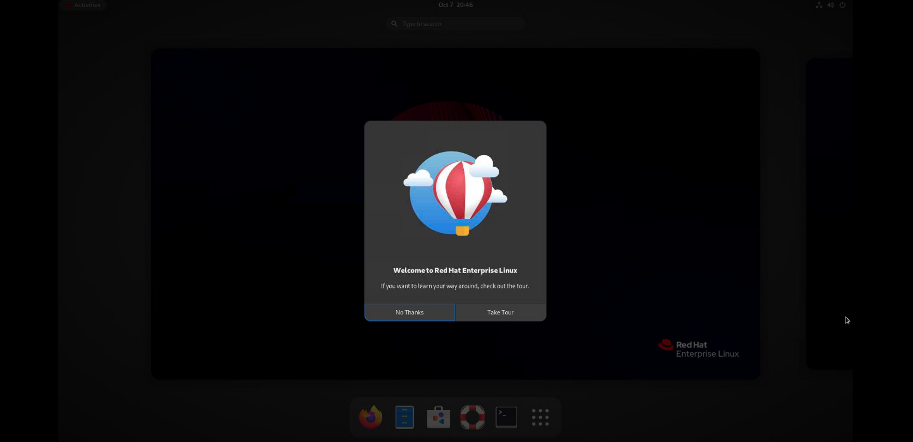
Click No thanks to dismiss the prompt. -
Click Activities in the top-left corner of the screen to open the application overview.
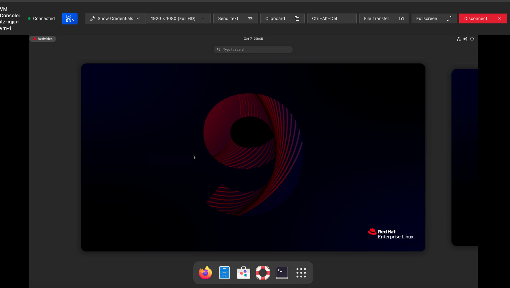
Click Activities in the top-left to open the overview. -
Click the grid of 9 dots in the middle-right of the overview to open the full application launcher, then find and click Bob to launch it.
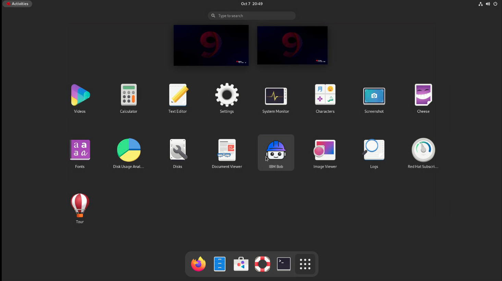
Click the 9-dot grid to open all apps, then click Bob. -
A popup may appear asking you to set a keychain password. You can either click Cancel or enter any password you'll remember — either option is fine and won't affect the workshop.
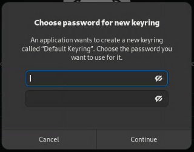
Hit Cancel or enter any password — this popup won't affect anything. - If a prompt asks whether you want to migrate Bob chats, click Yes.
-
Click the blue "Log in to Bob" button to start the sign-in flow.
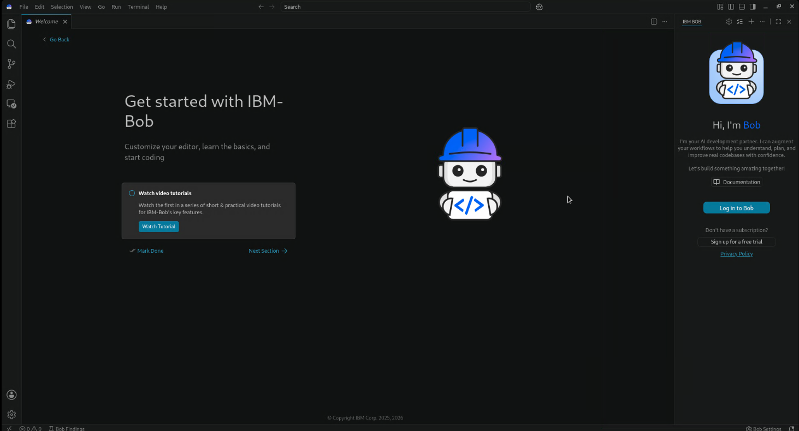
Click the blue Log in to Bob button. -
A browser window will open asking for permission — click Allow.
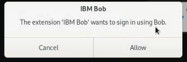
Click Allow to grant Bob access. -
A dialog will appear asking if you want to open Bob — click Open.
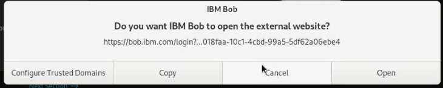
Click Open to return to Bob. -
You'll be taken back to Bob. You should see a prompt — click Open to continue.
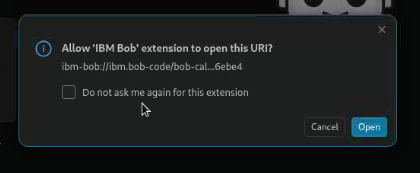
Click Open — you are now signed in to Bob.
▶⚠ Only if you can't sign in to Bob
The VM browser may have stale cookies. Open the browser menu → Settings → Privacy & Security → Clear Data…. Check Cookies and site data and Cached web content, set the time range to All time, and click Clear. Then close and reopen the browser and try signing in again.
-
A prompt may appear — click No thanks to dismiss it and continue to the desktop.
-
3
Open your project folder in Bob
Now that you're signed in, open your working folder:
- Choose File → Open Folder… from the menu bar.
- Create a new folder called
mongo-labin your home folder, select it, and click Open. - Bob may show a Restricted Mode badge in the bottom-left status bar — click it, then click Trust.
-
4
Open Bob's terminal
Press Ctrl + ` (backtick, top-left of the keyboard next to 1), or go to Terminal → New Terminal in the menu bar. A panel opens at the bottom of Bob with a blinking cursor. All commands below are typed here — you don't need to open a separate terminal application.
-
5
Check if Node and uv are already installed
Run this in Bob's terminal — if all three lines print a version number and Node shows v22 LTS, skip straight to step 7 (Add your workshop files and set up Python).
node --version npx --version uv --version▶💡 What to look for
You want three version numbers, with
nodeshowingv22.x.xor higher. If any command says "command not found" or Node is below v22, continue to step 7. -
6
Install Node and uv
Paste each block into Bob's terminal and press Enter, waiting for each to finish before running the next — you'll know it's done when the cursor reappears on a new line.
Step 6a — Install Node 22 LTS. This can take a few minutes — leave the terminal running and wait:
sudo dnf module enable nodejs:22 -y sudo dnf install -y nodejs npmIt may ask for your password — nothing shows as you type, that's normal. Type it and press Enter. After that the install continues automatically.
Step 6b — Install uv (this also downloads and manages Python for you):
curl -LsSf https://astral.sh/uv/install.sh | shStep 6c — Reload the terminal so it picks up the new
uvcommand:source ~/.bashrc -
7
Add your workshop files and set up Python
Drag your workshop files into mongo-lab. Bob already has
mongo-labopen — you should see it in the Explorer panel on the left. Open the VM's file manager (look for Files or Nautilus in the taskbar). Navigate to the Downloads folder. Open a second file manager window using Ctrl + N, then navigate to your home folder and openmongo-lab. Place both windows side by side, select all 5 files in Downloads, and drag them intomongo-lab.You should see all 5 files appear in Bob's Explorer panel on the left. Now run the setup in Bob's terminal:
cd ~/mongo-lab uv init uv add pymongo pypdfConfirm it worked:
uv run python -c "import pymongo, pypdf; print('pymongo', pymongo.version, '| pypdf', pypdf.__version__)"You should see something like
pymongo 4.x.x | pypdf 5.x.x. If you see anImportError, re-run theuv initblock above. -
✓
Checkpoint — VM is fully set up
Bob is open and signed in. Node, uv, and both Python libraries are installed. Continue to Step 02 to connect MongoDB.
▶⚠ Only if you can't reach the internet from the VM
The workshop requires outbound HTTPS to reach MongoDB Atlas and the MCP server. If connections are blocked, ask your IT team to allow outbound traffic on port 443 to *.mongodb.net and *.npmjs.org.
Connect MongoDB to Bob
One setup step, then everything else is conversation. You'll connect Bob to the MongoDB MCP server — the official bridge that hands an AI editor a real set of database tools. Once it's connected, plain-English requests become real operations on the lab database.
MCP (Model Context Protocol) is a standard way to give an AI assistant tools. The MongoDB MCP server is a live connection to the database — like clipping a database remote control onto Bob. Same move as the docs server in the last workshop, pointed at data instead.
-
1
Open Bob's MCP settings ⚙
Click the gear icon ⚙ at the top-right of Bob, then select MCP from the left sidebar. You'll see the empty state — No MCP servers found.
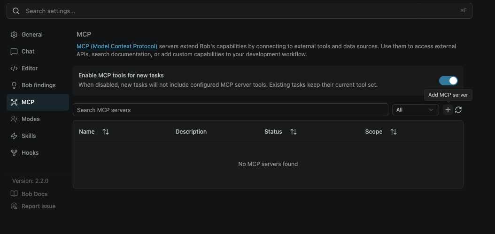
The MCP tab with no servers yet. The + button top-right (tooltip: Add MCP server) is what you click next. -
2
Choose this project, then open the config
Bob can save an MCP server in one of two places — and it matters which you pick:
- Global — the server turns on for every project you ever open in Bob.
- Project — the server lives inside this workshop folder only.
Click the + button at the top-right of the MCP servers list. Bob pops up an Add MCP Server dialog with a Configuration Scope dropdown — open it and you'll see two choices: Global (All Workspaces) and your project, mongo-lab. Pick your project — we want the MongoDB connection tied to this folder so it travels with the project and doesn't clutter the rest of your setup.
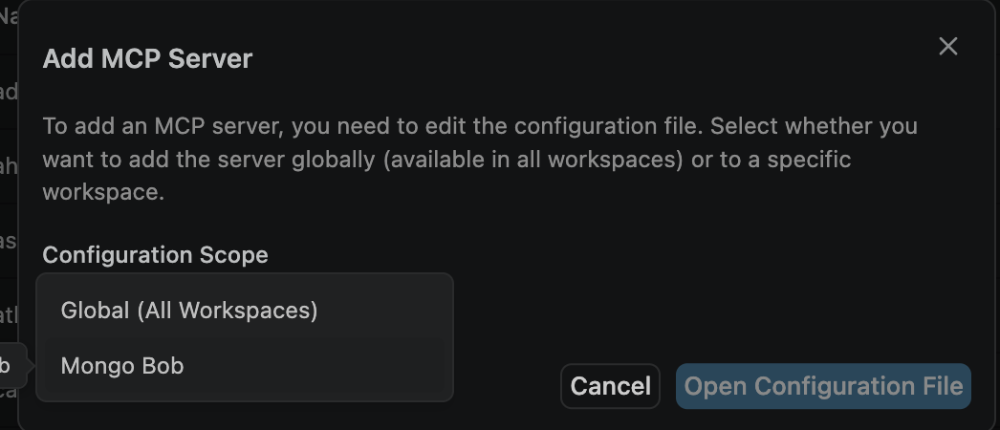
Select your workspace (mongo-lab, not Global). Then click Open Configuration File. Now click Open Configuration File. Bob opens a small JSON config file called
mcp.jsonin the editor — this is where you'll tell Bob how to launch the MongoDB MCP server. -
3
Paste the JSON config into mcp.json — and fill in your credentials
mcp.jsontells Bob how to launch the MongoDB MCP server. Your three credentials go directly into theenvblock as plain string values — replace the three placeholders below with the real values your instructor provides on the day.Replace the entire contents of
mcp.jsonwith the block below, then swap in your values:{ "mcpServers": { "mongodb": { "command": "npx", "args": [ "-y", "mongodb-mcp-server@latest" ], "env": { "MDB_MCP_CONNECTION_STRING": "your-connection-string-here", "MDB_MCP_API_CLIENT_ID": "your-client-id-here", "MDB_MCP_API_CLIENT_SECRET": "your-client-secret-here", "MDB_MCP_READ_ONLY": "false", "MDB_MCP_INDEX_CHECK": "false", "MDB_MCP_DISABLED_TOOLS": "", "MDB_MCP_MAX_DOCUMENTS_PER_QUERY": "100", "MDB_MCP_TELEMETRY": "enabled" } } } }Replace the three placeholders — keep the quotesYour credentials are in the MCPCredentials.boxnote file inside the Box folder you downloaded from earlier — open it to find the three values. Replace
your-connection-string-here,your-client-id-here, andyour-client-secret-herewith the real values from that file. Keep the surrounding double-quotes — that's required JSON syntax. The connection string starts withmongodb+srv://— paste the whole thing between the quotes. Do not change any other line.Save the file — ⌘S on macOS, Ctrl+S on Windows/Linux.
-
4
Create a .env file for the Python script
The Python script (
load_policies.py) that you'll run in Step 04 also needs your connection string — but it reads from a.envfile rather thanmcp.json. Create it now so it's ready when you need it.-
Show the Explorer. If you don't see the file tree on the left, click the top-most icon in the narrow strip on the far left (it looks like two stacked pages), or press ⌘⇧E (Windows/Linux: CtrlShiftE). You should see your project folder,
mongo-lab, at the top. -
Start a new file. Hover your cursor over the
mongo-labfolder name in the tree — a small row of icons appears to its right. Click the New File icon (a page with a small + on it). A blank name box opens in the tree. -
Name it exactly
.env— start with the dot, nothing before it (notenv, notmy.env). Press Enter. Bob opens the empty file in the editor. -
Paste this line into the file, replacing the placeholder with your connection string:
MDB_MCP_CONNECTION_STRING=your-connection-string-hereNo quotes — no spaces — exact formatPaste the value directly after the
=with no surrounding quotes and no spaces around the =. The connection string starts withmongodb+srv://— paste the whole thing as-is. -
Save the file — press ⌘S on macOS or Ctrl+S on Windows/Linux. The dot (●) on the editor tab turns back into an ✕ when the file is saved.
▶💡 Tip Don't see the dot turn into ✕?
If the tab still shows a dot (●), the file has unsaved changes. Press ⌘S / Ctrl+S again. If it still doesn't save, click inside the file first to make sure it's the active tab, then try again.
![[placeholder] Creating a new .env file in Bob's Explorer using the New File icon](img/placeholder-env-create.png)
Hover over mongo-lab in the Explorer and click the New File icon, then name it .env. -
Show the Explorer. If you don't see the file tree on the left, click the top-most icon in the narrow strip on the far left (it looks like two stacked pages), or press ⌘⇧E (Windows/Linux: CtrlShiftE). You should see your project folder,
-
5
Manually verify the connection in settings
Go back to Bob's MCP settings tab. The
mongodbrow should show ● Connected in the Status column. This is your manual confirmation that the MCP connection is live.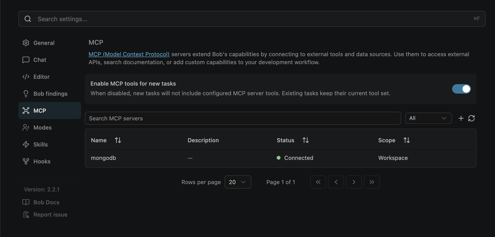
The MCP tab with mongodbshowing ● Connected under Status and Workspace under Scope. If you see a red or grey status, toggle the server off and on using the refresh icon (↻) top-right.Connected = Workspace scopeScope shows Workspace — this means the server is tied to your
mongo-labfolder, not global. That's exactly what you want. -
✓
Checkpoint — MCP is live
The mongodb server shows a green dot in the MCP tab and Bob confirmed the connection. You're ready to query the database.
▶💡 Why nothing to install?
MongoDB hosts this MCP server, so your laptop makes only an ordinary outbound HTTPS connection to it — it never opens a database port. That's why this works on locked-down corporate networks. Step 08 has the full picture.
▶⚠ Only if Bob lists no MongoDB tools
Check the entry is valid JSON (comma after any previous server, matching braces), that the server shows green in the MCP tab, and that you finished any browser sign-in. Toggle the server off and on to reconnect, then ask again. Still stuck? Flag a helper — it's nearly always a typo in the pasted block or a skipped sign-in.
Explore the database
Now that you're connected, ask Bob to show you what's in the database. This is your first real query against MongoDB using MCP.
-
1
Ask Bob about the database
Send this prompt to Bob:
Look only at the database named in my MCP connection string. Don't list or open any other databases on the cluster. List the collections in my database and explain simply what each one holds and how they connect.Bob will use a real MongoDB tool to list the collections and describe what each one stores. You'll see the
claims,policies, andcustomerscollections and learn how they link together viacustomer_idandpolicy_id. -
2
Optional — pull a sample record from each collection
Want to see real data before diving in? Ask Bob:
Show me a sample document from each collection — for example CLM-029 from claims, its linked policy, and the matching customer record.You'll see something like this from the
claimscollection:{ "claim_id": "CLM-029", "customer_id": 29, "policy_id": "POL-035", "category": "auto", "description": "Vehicle stolen overnight from residential driveway. Found the next day stripped of wheels and valuables.", "amount": 9300, "status": "under_review", "filed_date": "2024-08-14" }Notice
status: "under_review"— this claim is waiting on a decision. The question this workshop answers is: does the policy actually cover this? The coverage answer depends on whetherPOL-035(a Plus tier policy) includes theft. That answer lives in the PDF, not in this document. -
✓
Checkpoint — you know the schema
Bob has described the three collections and how they relate. You have a clear picture of the data. Next: load the policy PDFs.
Load policy PDFs into the database
In the project folder there are 3 policy PDFs and a script called load_policies.py. You'll ask Bob to explain the script, then run it to load the PDFs into your database.
-
1
Ask Bob about the script
Send Bob this prompt:
In the project folder there are 3 policy PDFs and a script called load_policies.py. Explain simply what the script does, then run it using "uv run python load_policies.py" to load the PDFs into my database. Tell me how many sections were created and if anything went wrong. Now show me the collection after this update.Bob will read
load_policies.py, explain what it does in plain English, then execute it withuv run python. The script parses each PDF into sections and inserts them into acoverage_sectionscollection in your database. -
✓
Checkpoint — PDFs are loaded
Bob reports how many sections were created across all three PDFs, and confirms no errors occurred. The
coverage_sectionscollection is now populated and ready to search.
Keyword search
Use Atlas keyword search to match each auto claim against the policy sections in coverage_sections. Bob will run a real search for every claim, one at a time, using MongoDB Atlas search operations.
-
1
Run keyword search for all auto claims
Send Bob this prompt:
Use keyword search on the policy documents in coverage_sections to find the matching policy section for each auto claim. Search with each claim's full description, filtered to its tier and the auto line, and take the top result. Run a real search for every claim, one at a time. Show a table: claim, what happened, section found, score, covered or not. Use atlas operation.Bob will run a real Atlas search operation for each auto claim and return a results table. Review each row — check whether the matched section makes sense for what happened in the claim.
-
2
Where keyword search fails — the CLM-029 gap
Look at CLM-029 in your results table. The claim description reads:
"Vehicle stolen overnight from residential driveway. Found the next day stripped of wheels and valuables."The correct policy section to match here is Unlawful Taking, Conversion And Felonious Abstraction. But keyword search looks for exact word overlap — and the claim never uses the word "unlawful", "taking", or "felonious." It just says "stolen."
Why keyword search misses thisAtlas keyword search scores documents by term frequency. "stolen", "driveway", and "wheels" do not appear in the policy section title — so the match score is low or zero. The claim might land on the wrong section entirely. This isn't a bug — it's the fundamental limit of lexical search. The fix is search that understands meaning, not just words.
-
✓
Checkpoint — keyword search results table complete
You have a full table and you've seen exactly where keyword search breaks down. Keep this result — you'll compare it directly to vector search in Step 07.
Reflect in Ask mode
Switch Bob to Ask mode and ask it to explain what it just did. Ask mode is read-only — Bob explains without running any new tools. It's a great way to understand what happened under the hood.
-
1
Switch to Ask mode and reflect
At the top of the Bob chat panel, switch the mode to Ask. Then send this prompt:
What was your process of your keyword search with the MongoDB database? Show me the query and MongoDB operations if any were used.Bob will walk through the Atlas search query it used, the
$searchaggregation stage, the filters applied (tier, line), and how it scored results. No new database calls are made — this is reflection only.Here's an example of the kind of query Bob generated and ran on your behalf:
db.coverage_sections.aggregate([ { $search: { index: "default", text: { query: "Vehicle stolen overnight from residential driveway. Found the next day stripped of wheels and valuables.", path: "text" } } }, { $match: { tier: "plus_extra", line: "auto" } }, { $limit: 1 }, { $project: { section_title: 1, score: { $meta: "searchScore" } } } ])This is what Bob wrote for you — instantlyThat aggregation pipeline has a
$searchstage, a filter, a limit, and a projection. Writing this from scratch requires knowing MongoDB's Atlas Search syntax, the correct index name, your field names, and the aggregation pipeline structure. Bob produced it from a plain-English prompt and ran it live against your database — through MCP, with no copy-paste, no terminal, no driver code. That's the power of combining Bob with the MongoDB MCP server.Why Ask mode?Ask mode prevents Bob from making any changes or running tools. It's safe to review and understand what happened without accidentally triggering a new operation. Switch back to Agent mode when you're ready to continue.
-
✓
Checkpoint — you understand the query
Bob has shown you the exact MongoDB operations used in the keyword search. Switch back to Agent mode for the next step.
Vector search
Now repeat the same exercise using vector (semantic) search on 5 of the auto claims, including CLM-029 and CLM-050. Vector search finds matches by meaning — not just exact keywords — using the voyage-4 embedding model.
Normally, adding vector search to a pipeline means: call an embedding API, store the vectors, create an index, then write a $vectorSearch query that references those vectors. MongoDB Atlas auto-embed removes all of that. When you create an auto-embed index on a text field, Atlas automatically generates and stores the embeddings for every document — and for every new search query — using the model you specify (here: voyage-4). You never write embedding code, manage vectors, or call an external API. You just search.
-
1
Run vector search on 5 auto claims
Send Bob this prompt (make sure you're back in Agent mode):
Now do the same using vector search on 5 of the auto claims, including CLM-029 and CLM-050. Search with each claim's full description, filtered to its tier and the auto line, and take the top result. Run a real search for every claim Show a table: claim, what happened, keyword section found, vector section found, score, covered or not. Use voyage-4 modelBob will use the voyage-4 embedding model to embed each claim description and search
coverage_sectionsby vector similarity. The results table will show both the keyword match (from Step 05) and the vector match side by side. -
2
Reflect on the vector search query
Stay in Ask mode (or switch to it now) and send this prompt:
What was your process of your vector search with the MongoDB database? Show me the query and MongoDB operations if any were used.Bob will show you the
$vectorSearchaggregation stage it used — compare it mentally to the$searchtext query from Step 06. Notice how the vector search query embeds the claim description on the fly rather than matching terms. -
✓
Checkpoint — vector search results table complete
You have a side-by-side table: keyword section found vs vector section found, score, and covered/not for each of the 5 claims. Keep this — you'll grade both in the next step.
▶⚠ Only if vector search returns no results
The voyage-4 index may need to be created first. Ask Bob: "Create a vector search index on coverage_sections using the voyage-4 model on the text field." Wait for the index to show active, then re-run the search.
Grade the results
Use the answer key CSV to objectively compare both search methods — which claims did each get right, and which did it get wrong?
-
1
Open the answer key
You already downloaded
answer_key.csvfrom the Box folder during setup — it should be sitting in yourmongo-labfolder and visible in Bob's Explorer panel alongside the PDFs and script. Click it to open and take a look at what's inside before grading.What's in the answer key?The CSV contains the correct policy section match for each auto claim — the ground truth you'll use to score both keyword and vector search results objectively.
-
2
Ask Bob to grade against the answer key
Use the answer key CSV file to compare the output table from keyword search and vector search and show me which ones were correct and wrongBob will read the answer key, line it up against both results tables, and produce a grading summary. For each claim it will mark: keyword correct or wrong, vector correct or wrong — and flag any where the methods disagreed.
-
✓
Checkpoint — grading complete
You have an objective score for both methods. You've seen exactly where keyword search excels (exact terminology matches) and where vector search wins (paraphrased or semantically similar descriptions like CLM-029). This is the core trade-off between lexical and semantic search in any real retrieval pipeline.
Automate claim decisions
You've checked coverage for individual claims — now automate the whole queue. You'll install a Bob skill called process-auto-claims that fetches every auto claim under review, checks each one against the policy sections using vector search, shows you a verdict table, and — only after you confirm — writes the decisions back to the database.
A skill is a reusable set of instructions packaged for Bob. Once installed, you invoke it by name — /process-auto-claims — and Bob follows the steps automatically. Think of it as a saved workflow you can run any time the queue has new claims.
-
1
Create the skill file
Ask Bob to create the skill. Make sure you're in Agent mode — Bob needs to write a file to your project.
Create a skill called "process-auto-claims" that: 1. Gets all claims where status is "under_review" AND type is "auto" from the claims collection 2. Joins each to its policy to get product_tier 3. Runs a vector search on coverage_sections for each claim's description using the vector_index index, filtered to the matching product_tier and line "auto", taking the top result 4. Assigns a verdict: - "approved" if coverage is "covered" and score >= 0.60 - "denied" if coverage is "not covered" or "exclusions" and score >= 0.60 - "needs human review" if score < 0.60 Note: scores will be in the 0.60–0.75 range because claim descriptions use plain English while policy section titles use formal legal language — this is expected and correct. 5. Shows a summary table: claim_id, tier, amount, brief description, matched policy section, similarity score, verdict 6. States the total: how many to approve, how many to deny, total dollar amounts 7. Asks me to type CONFIRM to apply, or CANCEL to discard 8. On CONFIRM: updates each claim's status to "approved" or "denied" in the claims collectionBob will create a
SKILL.mdfile at.bob/skills/process-auto-claims/SKILL.mdin your project. Approve the file write when Bob asks.Start a new chat after the skill is createdBob loads skills at the start of a conversation. Once the file is written, open a new chat before invoking the skill — otherwise Bob won't see it yet. To open a new chat: click the pencil / compose icon at the top of the Bob chat panel (next to the mode selector). A fresh conversation opens in the same window.
-
2
Run the skill
In a new chat, invoke the skill:
/process-auto-claimsBob will fetch the auto claims currently under review, run a vector search for each against
coverage_sections, and show you a table like this:# Claim Tier Amount What Happened Matched Policy Section Score Verdict ─ ────── ──────── ────── ──────────────────────────────── ────────────────────────────────────────────────────── ───── ───────────────────── 1 CLM-034 Basic $10,800 Car slid on highway, hit barrier. Direct Physical Loss By Impact Or Upset 0.667 ❌ DENIED Suspension and bumper damaged. STATUS: NOT IN FORCE (Basic does not include collision) 2 CLM-029 Plus $9,300 Vehicle stolen overnight. Unlawful Taking, Conversion And Felonious Abstraction 0.690 ✅ APPROVED Found stripped of wheels. STATUS: IN FORCE 3 CLM-043 Plus $8,900 Hailstorm dented hood, roof, Glazing And Transparent Vehicle Enclosures 0.729 ✅ APPROVED trunk. Windshield cracked. STATUS: IN FORCE 4 CLM-064 Plus Extra $7,800 Floodwaters entered cabin Specified Atmospheric And Natural Perils; 0.665 ✅ APPROVED through underpass. Electrical Malicious Mischief; Contact With Fauna systems failed. STATUS: IN FORCE 4 auto claims under review | 3 to approve ($26,000) | 1 to deny ($10,800) Type CONFIRM to apply these decisions, or CANCEL to discard.Why are the scores between 0.60 and 0.75?The claims are written in plain English ("car slid on highway") while the policy sections use formal legal titles ("Direct Physical Loss By Impact Or Upset"). The vector model captures the semantic match correctly — that's why the right section surfaces — but the score is lower than it would be with matching vocabulary. 0.60+ is a correct match in this dataset. This is exactly the kind of threshold tuning you'd do before deploying a system like this in production.
-
3
Review and confirm
Read each row carefully before typing anything:
- CLM-034 (Basic, collision) — denied correctly. Basic tier does not include collision coverage. The same claim filed on a Plus or Plus Extra policy would be approved.
- CLM-029 (Plus, theft) — approved. The vehicle theft section is active on Plus.
- CLM-064 (Plus Extra, flood) — approved. Weather and atmospheric perils are active on Plus Extra only.
When you're satisfied, type:
CONFIRMBob will call
update-manyonce per claim and report back how many were updated. The database now reflects the adjudication decisions.This writes to the databaseCONFIRM triggers real
update-manycalls. The claim statuses change fromunder_reviewtoapprovedordenied. If you want to reset the claims tounder_reviewafterward, ask Bob to do so. -
4
Verify the updates
Show me the current status of CLM-034, CLM-029, and CLM-064 in the claims collection.Each claim should now show its updated status. Ask Bob what you'd need to extend this skill to handle home and health claims — the answer is exactly what Step 04 already showed you.
-
✓
Checkpoint — automated adjudication complete
You've built a reusable skill that combines a live database query, a semantic search loop, a human confirmation gate, and a bulk write — all in plain English. Run
/process-auto-claimsany time a new batch of auto claims lands in the queue.
▶💡 Why only auto claims?
The coverage_sections collection was populated in Step 04 from the three auto policy PDFs. Home and health claims have no matching policy sections to search against — so the skill scopes itself to type: "auto" only. The 9 home and health claims remain under_review. To extend coverage: load home and health policy PDFs using load_policies.py, then update the skill to handle those types.
▶⚠ Only if the skill isn't found after a new chat
Confirm the file exists at .bob/skills/process-auto-claims/SKILL.md. Skill names must be lowercase with hyphens only — no underscores or spaces. If the file looks correct, restart Bob and open a new chat.
▶⚠ Only if vector search returns no results in the skill
The vector_index index must exist and be active on coverage_sections. Ask Bob: "What is the status of the vector_index index on coverage_sections?" If it's missing, re-run Step 07 to create it, then wait for the status to show active before invoking the skill again.
Portfolio risk report
You've been working claim by claim. Now zoom out. This step builds a reusable analytics skill that answers five business questions from the live database, writes a plain-English narrative interpreting what the data says, and outputs a self-contained HTML dashboard — ready to re-run every month.
Step 09 was operational — process individual claims, write decisions back. This step is analytical — aggregate across the whole portfolio and surface patterns. MongoDB supports both from the same database, with the same MCP tools. That's the point.
- Portfolio health — how many claims, what is total exposure, what proportion is still outstanding?
- Where are the disputes? — which tier and claim type combinations have the highest denial rates?
- What's our pending liability? — which buckets are under review and how much do they represent?
- Are there seasonal patterns? — which months drive the most volume and cost, broken down by claim type?
- Which customers cost the most? — which segment (retail / SME / corporate) carries the highest financial exposure?
-
1
Create the skill
Make sure you're in Agent mode, then ask Bob:
Create a skill called "claims-risk-report" that runs five reusable aggregation pipelines against the claims, policies, and customers collections to answer these business questions every month: 1. Portfolio snapshot — total claims, total exposure, and breakdown by status (settled / denied / under_review) 2. Denial rate by tier and claim type — join claims to policies, group by product_tier and type, compute denial rate as a percentage, flag combinations above 50% as HIGH DISPUTE RISK and 25-50% as ELEVATED 3. Pending liability — filter to under_review claims only, group by tier and type, show count and total outstanding amount, sorted by amount descending 4. Monthly claim volume by type — group by year/month and claim type (auto/home/health), show count and total amount per month per type 5. Segment exposure — join claims to customers, group by customer segment and claim type, show total and average claim amount After running all five pipelines, write a 4-6 sentence plain-English narrative that interprets the findings using specific numbers from the data — covering portfolio health, the biggest denial rate signal, seasonal patterns, highest-cost segment, and total pending liability. Then write a self-contained HTML dashboard called risk-dashboard.html to the project root with: a header bar showing the run date, four KPI cards (total claims, total exposure, under review amount, overall denial rate), the narrative in a highlighted callout box, a denial rate heatmap table (tiers as rows, claim types as columns, cells colour-coded red/amber/green), a pending liability table, a stacked bar chart of monthly volume by type (inline SVG, no libraries), and a grouped bar chart of segment exposure (inline SVG). All figures come from the live pipeline results embedded as JSON in the file. The skill is read-only.Bob will create
.bob/skills/claims-risk-report/SKILL.md. Approve the file write, then open a new chat before invoking it.Skill already created?If you're following this guide end-to-end, the skill file already exists from a previous step. Skip straight to step 2 — open a new chat and invoke it.
-
2
Run the skill
In a new chat, invoke it:
/claims-risk-reportBob runs all five pipelines against the live database, generates the AI narrative, then writes
risk-dashboard.html. This takes about 30–60 seconds. Open the dashboard:open risk-dashboard.htmlThe dashboard contains six sections:
Section What it shows MongoDB pattern used KPI cards Total claims, exposure, under-review amount, denial rate $groupWhat the data says AI-generated narrative with specific numbers — Denial rate heatmap 3×3 grid: tiers × claim types, colour-coded $lookup+$group+ computed fieldPending liability Under-review buckets ranked by outstanding amount $match+$groupMonthly volume chart Stacked bars: auto / home / health per month $groupby date partsSegment exposure chart Grouped bars: retail / SME / corporate by claim type 3-collection $lookupRe-run every monthThe pipelines are stored in the skill — they never change. Run
/claims-risk-reportat the start of each month and Bob overwritesrisk-dashboard.htmlwith fresh numbers and a fresh narrative. No editing required. -
3
Export the pipeline results as JSON
Bob's
exporttool lets you download any query or aggregation result as a.jsonfile — useful for handing data to another system, archiving a monthly snapshot, or loading into a spreadsheet.Ask Bob to export one of the five pipelines. For example, to export the pending liability data:
Export the under_review claims grouped by tier and type as JSON — same pipeline as the pending liability section of the risk report.Bob calls the
exporttool against theclaimscollection and writes a.jsonfile to the project folder. You can export any of the five pipelines the same way — just describe which one you want.The data is already embeddedThe
risk-dashboard.htmlfile already contains all five pipeline results as JSON literals inside a<script>tag — you can copy them directly from there without re-running a query. -
✓
Checkpoint — monthly portfolio report complete
You have a reusable skill that runs five aggregation pipelines, generates an AI narrative, and outputs a live HTML dashboard — all in one command. You can also export any pipeline result as JSON directly from Bob. Re-run
/claims-risk-reportany month and the dashboard is overwritten with fresh data automatically.
▶💡 What aggregation patterns does this teach?
Each pipeline section uses a different MongoDB aggregation pattern:
$groupwith multiple accumulators — portfolio snapshot and monthly volume$lookup+$group+$addFields— denial rate computed from a joined field$match+$group— filtered aggregation for pending-only claims$groupby date parts — grouping by year/month using$yearand$monthoperators- Three-collection
$lookup— claims → customers for segment analysis
That's the full aggregation toolkit in one skill.
▶💡 Where to go from here
This report runs on demand. A production data engineering workflow would schedule it — an Atlas scheduled trigger runs the pipelines nightly, exports JSON to a data warehouse, and emails the dashboard to stakeholders automatically. The pipelines you've written here are exactly what that trigger would execute. That's the natural next step after this workshop.
▶⚠ Only if the pipeline returns no results
The $lookup joins on policy_id and customer_id. If the field types differ between collections (number vs string), the join returns nothing silently. Ask Bob: "Check the data types of policy_id and customer_id across the claims, policies, and customers collections." If they differ, ask Bob to add a $addFields cast stage before the lookup.
▶⚠ Only if the dashboard file opens blank
The dashboard renders from JSON variables embedded in the file. If Bob didn't finish writing before you opened it, close the browser tab, wait for Bob to confirm the file is written, then reopen. If it's still blank, ask Bob: "Did you embed the pipeline results as JSON in risk-dashboard.html? Show me the SNAPSHOT variable."
Troubleshooting
Most fixes sit in the step where you'd hit them (the grey "⚠ Only if…" bars). Here they are in one place.
▶FIX Bob shows no MongoDB tools
Confirm the mongodb entry is valid JSON (comma after any previous server, matching braces), the server shows a green dot in the MCP tab, and you completed any browser sign-in. Toggle the server off and on, then ask "what MongoDB tools do you have?" again.
▶FIX Bob can't update a claim status
Make sure Bob is in Agent mode — only Agent mode can call write tools. If you get a permissions error, the sandbox connection may be read-only. Let your instructor know.
▶FIX Vector search on claims returns nothing
Check that the claim_semantic index is active — ask Bob for its status. If it's still building, wait for ready/active before querying. Also confirm the index name in the query matches exactly.
▶FIX Bob gives a coverage verdict without citing a PDF section
Bob may be working from memory rather than re-reading the PDF. Prompt it explicitly: "Re-read policy_plus.pdf and cite the exact section number that covers or excludes this claim." The Claims Adjuster mode (Step 07) enforces this by default.
▶FIX Index creation is refused
Either the cluster's index limit is reached or the connection is read-only. Your instructor will provide one shared index; Steps 05 onwards work identically against it.
▶FIX Bob won't create files (AGENTS.md, skills)
Make sure Bob is in Agent mode. Approve the file write when Bob asks.
Still stuck? Flag a helper, or paste the exact error into Bob's chat and ask what to do.